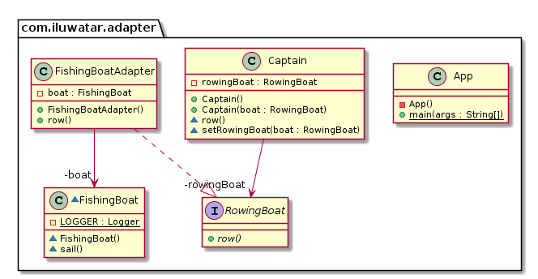

菜鸟教程笔记-计算机读取SD卡例子 先模拟计算机读取SD卡： 1、先创建一个SD卡的接口：
public interface SDCard String readSD () ; int writeSD (String msg) }
2、创建SD卡接口的实现类，模拟SD卡的功能：
public class SDCardImpl implements SDCard @Override public String readSD () String msg = "sdcard read a msg :hello word SD" ; return msg; } @Override public int writeSD (String msg) System.out.println("sd card write msg : " + msg); return 1 ; } }
3、创建计算机接口，计算机提供读取SD卡方法：
public interface Computer String readSD (SDCard sdCard) ; }
4、创建一个计算机实例，实现计算机接口，并实现其读取SD卡方法：
public class ThinkpadComputer implements Computer @Override public String readSD (SDCard sdCard) if (sdCard == null )throw new NullPointerException("sd card null" ); return sdCard.readSD(); } }
5、这时候就可以模拟计算机读取SD卡功能：
public class ComputerReadDemo public static void main (String[] args) Computer computer = new ThinkpadComputer(); SDCard sdCard = new SDCardImpl(); System.out.println(computer.readSD(sdCard)); } }
接下来在不改变计算机读取SD卡接口的情况下，通过适配器模式读取TF卡： 1、创建TF卡接口：
public interface TFCard String readTF () ; int writeTF (String msg) }
2、创建TF卡实例：
public class TFCardImpl implements TFCard @Override public String readTF () String msg ="tf card reade msg : hello word tf card" ; return msg; } @Override public int writeTF (String msg) System.out.println("tf card write a msg : " + msg); return 1 ; } }
3、创建SD适配TF （也可以说是SD兼容TF，相当于读卡器）：
对象适配器 public class SDObjectAdapterTF implements SDCard private TFCard tfCard; public SDAdapterTF (TFCard tfCard) this .tfCard = tfCard; } @Override public String readSD () System.out.println("adapter read tf card " ); return tfCard.readTF(); } @Override public int writeSD (String msg) System.out.println("adapter write tf card" ); return tfCard.writeTF(msg); } }
类适配器 public class SDClassAdapterTF extends TFCardImpl implements SDCard @Override public String readSD () System.out.println("adapter read tf card " ); return readTF(); } @Override public int writeSD (String msg) System.out.println("adapter write tf card" ); return writeTF(msg); } }
4、通过上面的例子测试计算机通过SD读卡器读取TF卡：
public class ComputerReadDemo public static void main (String[] args) Computer computer = new ThinkpadComputer(); SDCard sdCard = new SDCardImpl(); System.out.println(computer.readSD(sdCard)); System.out.println("====================================" ); TFCard tfCard = new TFCardImpl(); SDCard tfCardObjectAdapterSD = new SDObjectAdapterTF(tfCard); System.out.println(computer.readSD(tfCardObjectAdapterSD)); SDCard tfCardClassAdapterSD = new SDClassAdapterTF(); System.out.println(computer.readSD(tfCardClassAdapterSD)); } }
输出：
sdcard read a msg :hello word SD ==================================== adapter read tf card tf card reade msg : hello word tf card
在这种模式下，计算机并不需要知道具体是什么卡，只需要负责操作接口即可，具体操作的什么类，由适配器决定。
适配器设计模式UML类图 
适配器设计模式java实现 public interface RowingBoat void row () } public final class Captain private RowingBoat rowingBoat; public Captain () } public Captain (final RowingBoat boat) this .rowingBoat = boat; } void setRowingBoat (final RowingBoat boat) this .rowingBoat = boat; } void row () rowingBoat.row(); } } final class FishingBoat private static final Logger LOGGER = getLogger(FishingBoat.class ) ; void sail () LOGGER.info("The fishing boat is sailing" ); } } public class FishingBoatAdapter implements RowingBoat private FishingBoat boat; public FishingBoatAdapter () boat = new FishingBoat(); } public final void row () boat.sail(); } } public final class App private App () } public static void main (final String[] args) var captain = new Captain(new FishingBoatAdapter()); captain.row(); } }
应用场景 spring AOP中的适配器模式 在Spring的Aop中，使用的 Advice（通知） 来增强被代理类的功能。
public interface MethodBeforeAdvice extends BeforeAdvice void before (Method var1, Object[] var2, @Nullable Object var3) throws Throwable } public interface AfterReturningAdvice extends AfterAdvice void afterReturning (@Nullable Object var1, Method var2, Object[] var3, @Nullable Object var4) throws Throwable } public interface ThrowsAdvice extends AfterAdvice }
public interface AdvisorAdapter boolean supportsAdvice (Advice var1) MethodInterceptor getInterceptor (Advisor var1) ; }
三个适配器类 Adapter 分别如下，注意其中的 Advice、Adapter、Interceptor之间的对应关系
class MethodBeforeAdviceAdapter implements AdvisorAdapter , Serializable @Override public boolean supportsAdvice (Advice advice) return (advice instanceof MethodBeforeAdvice); } @Override public MethodInterceptor getInterceptor (Advisor advisor) MethodBeforeAdvice advice = (MethodBeforeAdvice) advisor.getAdvice(); return new MethodBeforeAdviceInterceptor(advice); } } @SuppressWarnings ("serial" )class AfterReturningAdviceAdapter implements AdvisorAdapter , Serializable @Override public boolean supportsAdvice (Advice advice) return (advice instanceof AfterReturningAdvice); } @Override public MethodInterceptor getInterceptor (Advisor advisor) AfterReturningAdvice advice = (AfterReturningAdvice) advisor.getAdvice(); return new AfterReturningAdviceInterceptor(advice); } } class ThrowsAdviceAdapter implements AdvisorAdapter , Serializable @Override public boolean supportsAdvice (Advice advice) return (advice instanceof ThrowsAdvice); } @Override public MethodInterceptor getInterceptor (Advisor advisor) return new ThrowsAdviceInterceptor(advisor.getAdvice()); } }
客户端 DefaultAdvisorAdapterRegistry
public class DefaultAdvisorAdapterRegistry implements AdvisorAdapterRegistry , Serializable private final List<AdvisorAdapter> adapters = new ArrayList(3 ); public DefaultAdvisorAdapterRegistry () this .registerAdvisorAdapter(new MethodBeforeAdviceAdapter()); this .registerAdvisorAdapter(new AfterReturningAdviceAdapter()); this .registerAdvisorAdapter(new ThrowsAdviceAdapter()); } public MethodInterceptor[] getInterceptors(Advisor advisor) throws UnknownAdviceTypeException { List<MethodInterceptor> interceptors = new ArrayList(3 ); Advice advice = advisor.getAdvice(); if (advice instanceof MethodInterceptor) { interceptors.add((MethodInterceptor)advice); } Iterator var4 = this .adapters.iterator(); while (var4.hasNext()) { AdvisorAdapter adapter = (AdvisorAdapter)var4.next(); if (adapter.supportsAdvice(advice)) { interceptors.add(adapter.getInterceptor(advisor)); } } if (interceptors.isEmpty()) { throw new UnknownAdviceTypeException(advisor.getAdvice()); } else { return (MethodInterceptor[])interceptors.toArray(new MethodInterceptor[0 ]); } } }
这里看 while 循环里，逐个取出注册的适配器，调用 supportsAdvice() 方法来判断 Advice 对应的类型，然后调用 getInterceptor() 创建对应类型的拦截器
spring JPA中的适配器模式 在Spring的ORM包中，对于JPA的支持也是采用了适配器模式，首先定义了一个接口的 JpaVendorAdapter，然后不同的持久层框架都实现此接口。
public interface JpaVendorAdapter public abstract PersistenceProvider getPersistenceProvider () public abstract String getPersistenceProviderRootPackage () public abstract Map<String, ?> getJpaPropertyMap(); public abstract JpaDialect getJpaDialect () public abstract Class<? extends EntityManagerFactory> getEntityManagerFactoryInterface(); public abstract Class<? extends EntityManager> getEntityManagerInterface(); public abstract void postProcessEntityManagerFactory (EntityManagerFactory paramEntityManagerFactory) }
我们来看其中一个适配器实现类 HibernateJpaVendorAdapter
public class HibernateJpaVendorAdapter extends AbstractJpaVendorAdapter private final PersistenceProvider persistenceProvider; private final JpaDialect jpaDialect; public HibernateJpaVendorAdapter () this .persistenceProvider = new HibernatePersistence(); this .jpaDialect = new HibernateJpaDialect(); } public PersistenceProvider getPersistenceProvider () return this .persistenceProvider; } public String getPersistenceProviderRootPackage () return "org.hibernate" ; } public Map<String, Object> getJpaPropertyMap () Map jpaProperties = new HashMap(); if (getDatabasePlatform() != null ) { jpaProperties.put("hibernate.dialect" , getDatabasePlatform()); } else if (getDatabase() != null ) { Class databaseDialectClass = determineDatabaseDialectClass(getDatabase()); if (databaseDialectClass != null ) { jpaProperties.put("hibernate.dialect" , databaseDialectClass.getName()); } } if (isGenerateDdl()) { jpaProperties.put("hibernate.hbm2ddl.auto" , "update" ); } if (isShowSql()) { jpaProperties.put("hibernate.show_sql" , "true" ); } return jpaProperties; } protected Class determineDatabaseDialectClass (Database database) { switch (1 .$SwitchMap$org$springframework$orm$jpa$vendor$Database[database.ordinal()]) { case 1 : return DB2Dialect.class ; case 2 : return DerbyDialect.class ; case 3 : return H2Dialect.class ; case 4 : return HSQLDialect.class ; case 5 : return InformixDialect.class ; case 6 : return MySQLDialect.class ; case 7 : return Oracle9iDialect.class ; case 8 : return PostgreSQLDialect.class ; case 9 : return SQLServerDialect.class ; case 10 : return SybaseDialect.class ; } return null ; } public JpaDialect getJpaDialect () return this .jpaDialect; } public Class<? extends EntityManagerFactory> getEntityManagerFactoryInterface() { return HibernateEntityManagerFactory.class ; } public Class<? extends EntityManager> getEntityManagerInterface() { return HibernateEntityManager.class ; } }
配置文件中可以这样指定
<bean id="jpaVendorAdapter" class "org.springframework.orm.jpa.vendor.HibernateJpaVendorAdapter" > <property name="generateDdl" value="false" /> <property name="database" value="HSQL" /> </bean> <bean id="jpaDialect" class "org.springframework.orm.jpa.vendor.HibernateJpaDialect" />
spring MVC中的适配器模式 Spring MVC中的适配器模式主要用于执行目标 Controller 中的请求处理方法。
if (mappedHandler.getHandler() instanceof MultiActionController){ ((MultiActionController)mappedHandler.getHandler()).xxx }else if (mappedHandler.getHandler() instanceof XXX){ ... }else if (...){ ... }
这样假设如果我们增加一个 HardController,就要在代码中加入一行 if(mappedHandler.getHandler() instanceof HardController)，这种形式就使得程序难以维护，也违反了设计模式中的开闭原则 – 对扩展开放，对修改关闭。
public interface HandlerAdapter boolean supports (Object var1) ModelAndView handle (HttpServletRequest var1, HttpServletResponse var2, Object var3) throws Exception ; long getLastModified (HttpServletRequest var1, Object var2) }
现该接口的适配器每一个 Controller 都有一个适配器与之对应，这样的话，每自定义一个 Controller 需要定义一个实现 HandlerAdapter 的适配器。
public class HttpRequestHandlerAdapter implements HandlerAdapter public HttpRequestHandlerAdapter () } public boolean supports (Object handler) return handler instanceof HttpRequestHandler; } public ModelAndView handle (HttpServletRequest request, HttpServletResponse response, Object handler) throws Exception ((HttpRequestHandler)handler).handleRequest(request, response); return null ; } public long getLastModified (HttpServletRequest request, Object handler) return handler instanceof LastModified ? ((LastModified)handler).getLastModified(request) : -1L ; } }
当Spring容器启动后，会将所有定义好的适配器对象存放在一个List集合中，当一个请求来临时，DispatcherServlet 会通过 handler 的类型找到对应适配器，并将该适配器对象返回给用户，然后就可以统一通过适配器的 hanle() 方法来调用 Controller 中的用于处理请求的方法。
public class DispatcherServlet extends FrameworkServlet private List<HandlerAdapter> handlerAdapters; private void initHandlerAdapters (ApplicationContext context) } protected HandlerAdapter getHandlerAdapter (Object handler) throws ServletException for (HandlerAdapter ha : this .handlerAdapters) { if (logger.isTraceEnabled()) { logger.trace("Testing handler adapter [" + ha + "]" ); } if (ha.supports(handler)) { return ha; } } } protected void doDispatch (HttpServletRequest request, HttpServletResponse response) throws Exception HttpServletRequest processedRequest = request; HandlerExecutionChain mappedHandler = null ; mappedHandler = getHandler(processedRequest); HandlerAdapter ha = getHandlerAdapter(mappedHandler.getHandler()); ha.getLastModified(request, mappedHandler.getHandler()); mv = ha.handle(processedRequest, response, mappedHandler.getHandler()); } }
通过适配器模式我们将所有的 controller 统一交给 HandlerAdapter 处理，免去了写大量的 if-else 语句对 Controller 进行判断，也更利于扩展新的 Controller 类型。